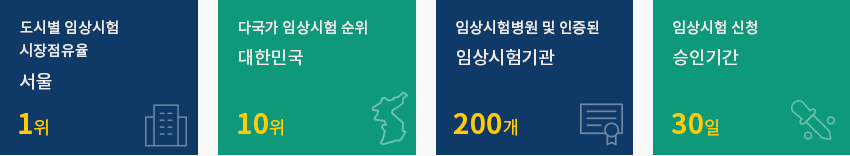
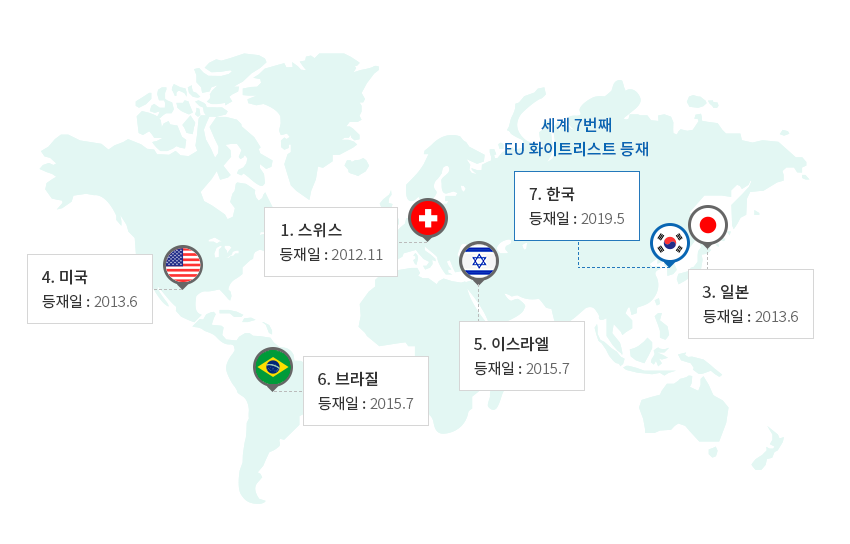
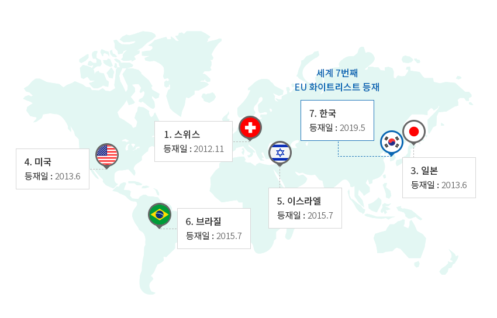
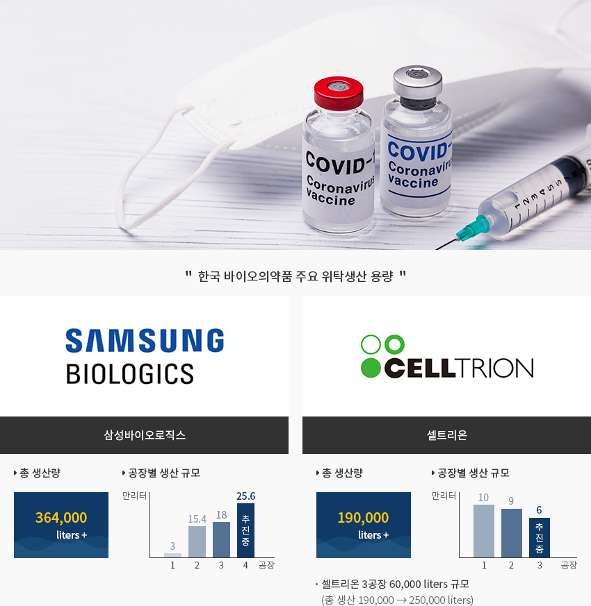
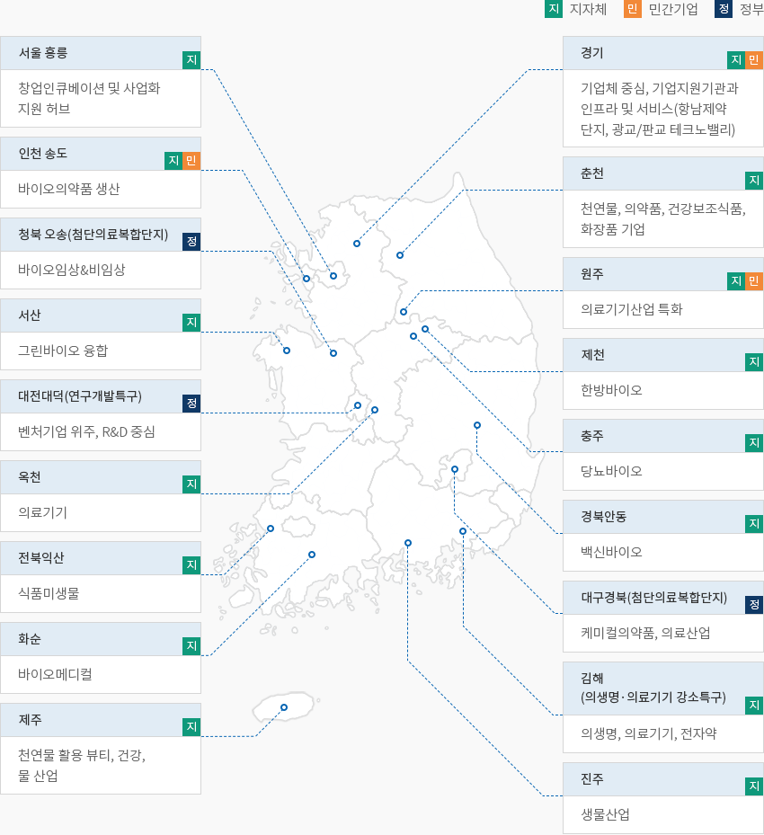

제약·바이오
- Home
- Why KOREA
- 산업
- 의약·바이오
의약·바이오
Healthcare & Bio
-
글로벌한 임상시험과 국제적 규제 환경 글로벌 임상시험 6위 국가 내용닫기글로벌한 임상시험과 국제적 규제 환경 글로벌 임상시험 6위 국가식품의약품안전처(MFDS)가 미국 국립보건원의 임상시험 등록시스템(ClinicalTrials.gov) 데이터를 분석한 결과,
2020년 기준, 한국의 산업계 주도 임상시험 세계시장 점유율이 2019년 세계 8위에서 6위로, 다국가 임상시험 순위도
2019년 12위에서 2020년 10위로 상승했다. 특히, 서울은 글로벌 임상시험 도시별 순위, 1위를 지속하고 있다 (2017년부터).신속한 승인신청 기간(30일)과 효율적 IRB구성, 크고 다양한 환자 풀을 구성한 검증된 30개 이상의 임상시험 병원과
170개 임상시험기관 (Clinical trial centers, CTCs) 등, 우수한 인프라를 활용하여 한국에서의 의약품 임상시험
승인건수는 2020년에도 전년대비 12% 증가하며 꾸준한 증가세를 보였다.한국은 2014년 의약품실사상호협력기구(PIC/S), 2016년 국제의약품규제조화위원회(ICH)에 가입하는 등
의약품 분야 규제 선진국으로 인정받고 있다. 2019년 5월에는 세계에서 7번째로 EU 화이트리스트에 등재되어
EU 수출시 요구되던 원료의약품의 GMP서면확인서를 면제받게 되었다.- 도시별 임상시험 시장점유율(서울) 1위
- 다국가 임상시험 순위 (대한민국) 10위
- 임상시험병원 및 인증된 (임상시험기관) 200개
- 임상시험 신청(승인기간) 30일
 ※ 출처 : 식품의약품안전처/한국바이오협회"EU 화이트리스트(GMP 서면확인서 면제 국가)"세계 7번째 EU 화이트리스트 등재
※ 출처 : 식품의약품안전처/한국바이오협회"EU 화이트리스트(GMP 서면확인서 면제 국가)"세계 7번째 EU 화이트리스트 등재- 1. 스위스 등재일: 2012.11
- 3. 일본 등재일: 2013.6
- 4. 미국 등재일: 2013.6
- 5. 이스라엘 등재일: 2015.7
- 6. 브라질 등재일:2015.7
- 7.한국 등재: 2019.5
※ 출처 : 식품의약품안전처 -
세계적인 바이오의약품 위탁생산 시설 내용열기세계적인 바이오의약품 위탁생산 시설한국은 세계 바이오 의약품 위탁생산 기지로서 위상을 높이고 있다.
삼성바이오로직스는 기존 36만 4천 리터 생산규모에 더해 25만 6천 리터 규모의 4공장을 신설하고 있으며,
셀트리온 역시 기존 19만 리터 생산규모에 더해 추가로 6만리터 규모의 3공장을 추진하고 있다.코로나19 팬데믹 상황에서 한국 기업과 글로벌 백신 기업간의 위탁생산 협력도 진행되고 있다.
SK바이오사이언스는 아스트라제네카 및 노바백스의 위탁생산을 추진중이고, 삼성바이오로직스는
모더나 백신의 위탁생산하여 제품을 출시 중에 있다."한국 바이오의약품 주요 위탁생산 용량"
- Samsung Biologics - 삼성바이오로직스
- 총 생산량 - 364,000 liters+
- 공장별 생산 규모
- plant 1: 30,000 liters
- plant 2: 154,000 liters
- plant 3: 180,000 liters
- plant 4: 256,000 liters (추진중)
- CELLTRION - 셀트리온
- 총 생산량 - 190,000 liters+
- 공장별 생산 규모
- plant 1: 100,000 liters
- plant 2: 90,000 liters
- plant 3: 60,000 liters (추진중)
셀트리온 3공장 60,000 liters 규모 (총 생산 190,000 ->250,000 liters)
- Samsung Biologics - 삼성바이오로직스
-
완제의약품을 중심으로 한 바이오 산업전반의 성장 내용열기완제의약품을 중심으로 한 바이오 산업 전반의 성장식품의약안전처에 따르면 2020년 국내 의약품 생산실적은 24조 5,655억원으로 전년 대비 10.1% 증가하였고, 최근 5년간
연평균성장률 6.9%를 보였다. 전체 의약품 생산액 중 완제의약품이 85.6%, 원료의약품이 14.4%를 차지하고 있다.
또한 2020년 의약품 수출액은 약 84억 달러로 전년 대비 62.5% 큰 폭의 성장을 기록하였으며,
수입은 약 73억 달러로 전년 대비 5.2% 증가하였다.(단위 : 조원, %, 억불, $)바이오산업 동향 통계로 구분, 년도 정보제공 출처 : 2018년 기준 국내바이오산업 실태조사 -
첨단 바이오 의약품 연구개발 성과와 정부의 지원 정책 내용열기첨단 바이오 의약품 연구개발 성과와 정부의 지원 정책바이오의약품 시장은 바이오시밀러 수출에 힘입어 연평균 13% 증가하는 한국의 성장동력 산업이다.한국은 바이오시밀러 연구개발 분야에서 세계적으로 두각을 보이고 있으며, 2021년 9월 기준 미국 FDA가
허가한 31개 바이오시밀러 중 8개가 한국에서 개벌된 제품으로 신속한 연구개발 역량을 확인할 수 있다.한국 정부는 바이오산업을 국가 혁신성장 3대 핵심산업으로 선정, 코로나19 대응 및 치료를 위해
‘K-글로벌 백신 허브화’ 추진전략으로 산업육성 및 기업지원책 마련하고 있다. 일정요건을 갖춘 의약·바이오
분야의 외국인투자에 대해서는 조세특례제한법을 통해 소득세, 취득세 및 재산세를 감면하고, 시행령에서 정한
자본재의 경우 관세, 개별소비세 및 부가가치세를 면제하고 있다. 2022년부터는 ‘첨단투자 지구지정’ 및
‘현금지원 제도 개선’을 통해 외국인투자기업에 대한 혜택을 확대 시행한다.한편, 「첨단재생의료 및 첨단바이오의약품 안전 및 지원에 관한 법률」이 제정되어 2020년 9월부터 시행되고 있다.
첨단바이오의약품은 살아있는 세포, 조직 또는 유전자를 원료로 제조한 바이오의약품으로 세포치료제, 유전자치료제,
조직공학제제 등을 포함하고 있다. 기존의 합성의약품과는 다른 첨단바이오의약품의 특성에 맞도록 제조하고
품질관리기준을 마련하는 등 합리적 허가 심사체계 마련되었다. -
글로벌 제약사들의 한국 내 임상연구 및 공동 연구개발 증가 내용열기글로벌 제약사들의 한국 내 임상연구 및 공동 연구개발 증가한국글로벌의약산업협회에 따르면 한국에 진출한 글로벌 제약사 35개사가 2019년 임상연구에 투자한 R&D 총비용은
약 4억 달러(한화 4,837억 원)로 매년 지속적인 증가 추세에 있다. 2019년 한해 이들 기업들이 한국에서 수행한
임상연구도 1,536건에 달했다.글로벌제약사는 한국의 제약사와 해외 진출을 협력함으로써 국내 제약사의 글로벌 시장 진출 경험을 공유하고 있다."다국적제약사 한국 기업과의 해외 공동진출 추진사례"다국적제약사 한국 기업과의 해외 공동진출 추진사례 표로 외투기업, 한국기업/기관, 협력내용 정보제공 외투기업 한국기업/기관 협력내용 Abbott 희망기업 주기적으로 글로벌 임상 및 허가/규제 최신 트렌드 등 교육 Abbvie 동아ST 면역항암제 MerTK 억제제 공동 연구 진행 Janssen 유한양행 폐암치료제 ‘레이져티닙’ 공동개발, 상업화 기술수출 계약 MSD 삼성바이오에피스 다수의 바이오시밀러 글로벌 상업화 협력 동아ST 슈퍼박테리아 항생제 신약 ‘테디졸리드’ 공동해외진출 한미약품 복합고혈압 치료제 ‘코자XQ’ R&D 투자 및 50여개국 수출 서울바이오허브 MSD 이노베이션 파트너링 오피스 개소(‘20.3)하여 한국 기업들의 글로벌 진출 지원 중 Zuellig Pharma 보령제약 카나브, 듀카브 등에 대한 동남아 13개국 독점 라이선스 계약 ※ 출처 : 한국글로벌의약산업협회 2020년 연간보고서글로벌 제약사는 국내 제약사, 의료기관, 연구기관 등과 함께 다양한 신약개발 연구를 수행하고 있습니다."다국적제약사 한국 기업과의 공동 연구개발 추진사례"다국적제약사 한국 기업과의 공동 연구개발 추진사례 표로 외투기업, 한국기업/기관, 협력내용 정보제공 외투기업 한국기업/기관 협력내용 AstraZeneca 동아ST 3개 면역항암제 선도 물질에 대한 물질 탐색 공동연구 중 Bayer 바이탈스미스, 스카이랩스 등 Bayer 본사의 오픈 이노베이션 프로그램의 한국 버전 ‘Grants4Apps Korea’ 실시 BMS 삼성바이오로직스 상업용 바이오 항체 신약에 대한 생산 계약 체결 - 국내 파트너 물색을 위한 Korea Open Innovation 런칭 GSK 국내 주요 연구기관 차세대 항암신약 개발 공동 연구, 면역항암제 신약 후보물질에 대한 First Trial in Patient 연구 실시 Leo Pharma - 피부질환 연구지원 프로그램인 LEO Open Innovation lab 프로그램 진행 Lilly 한국화학연구원 개방형 혁신 신약 개발 파트너십 체결 MSD 범부처신약개발사업단 제넥신, 메드펙토, 파멥신, 엔케이맥스 등 한국의 여러 바이오벤처와 항암제 관련 공동 연구개발 프로그램 진행 Novartis 서울바이오허브 한국과의 협력을 위한 한국노바티스 혁신협력오피스 (Novartis Korea Innovation Partnering Office) 운영 가톨릭 중앙의료원 보건의료 데이터 및 디지털 기술 활용 신약개발 연구협력 MOU 체결 (‘20.4) Pfizer - ‘INSPIRE’ 프로그램 진행(2012~현재) Sanofi-Aventis - 한국의 유망 바이오 스타트업과 차세대 항암제 개발 프로그램 협업 추진 Sanofi-Pasteur SK바이오사이언스 차세대 폐렴구균 단백접합백신 글로벌 공동연구 중 ※ 출처 : 한국글로벌의약산업협회 2020년 연간보고서 -
지역별 바이오클러스터 조성 내용열기지역별 바이오클러스터 조성한국은 전역에 걸쳐 바이오 관련 클러스터가 조성되어 있으며, 의약품 분야 특화 클러스터도 오송, 대구, 인천, 화순
등지에 다수 소재하고 있다. 바이오클러스터란 대학, 기업, 병원, 연구소 등이 지역 기반으로 긴밀한 네트워크를
구축한 결합체를 의미한다. 한국에 진출하는 해외 제약기업들이 이와 같은 지역에 소재할 경우,
세제 등 다양한 인센티브를 제공받고 관련 대학, 기업, 병원, 연구소 등과의 네트워킹을 지원받게 될 것이다."국내 바이오클러스터 현황"[지] - 지자체, [민] - 민간기업, [정] - 정부- 서울 홍릉(지자체): 창업인큐베이션 및 사업화 지원 허브
- 경기(지자체, 민간기업): 기업체 중심, 기업지원기관과 인프라 및 서비스(항남제약단지, 광교/핀교 테크노밸리)
- 인천 송도(지자체, 민간기업): 바이오의약품 생산
- 춘천(지자체): 천연물, 의약품, 건강보조식품, 화장품 기업
- 청북 오송(첨단의료복합단지)(정부): 바이오임상&비임상
- 원주(지자체, 민간기업): 의료기기산업 특화
- 서산(지자체): 그린바이오 융합
- 제천(지자체): 한방바이오
- 대전대덕(연구개발특구)(정부): 벤처기업 위주, R&D 중심
- 충주(지자체): 당뇨바이오
- 옥천(지자체): 의료기기
- 경북안동(지자체): 백신바이오
- 대구경북(첨단의료복합단지)(정부): 케미컬의약품, 의료산업
- 전북익산(지자체): 식품미생물
- 김해(의생명·의료기기 강소특구)(지자체): 의생명, 의료기기, 전자약
- 화순(지자체): 바이오메디컬
- 진주(지자체): 생물산업
- 제주(지자체): 천연물 활용 뷰티, 건강, 물 산업
※ 출처 : 보건복지부, 각 자지체
※ 자료협조 : 한국바이오협회


Invest KOREA담당자
의약/헬스케어 PM
정다히
신산업유치팀
T.+82-2-3460-7865
입지정보 추천
산업단지 정보
[인천광역시 미추홀구] 인천일반산업단지
세부정보 바로가기를 클릭하시면 산업단지공단의 Smart K-Factory 서비스의 해당 정보 화면으로 이동합니다.
-
단지명인천일반산업단지
-
최초지정일1973.04.01
-
지정면적(km2)1,136,269
-
관리기관인천도시공사
-
인근철도역부평역
-
역과 거리(km)7
-
인근공항김포국제공항
-
공항과의 거리(km)29
-
공업용수 공급용량(톤/일)-
-
가정용수 공급용량(톤/일)-
-
소속 기초 지자체인천광역시 미추홀구
-
인구수(명)2,943,491
산업단지 정보
[충청북도 청주시] 오송생명과학단지
세부정보 바로가기를 클릭하시면 산업단지공단의 Smart K-Factory 서비스의 해당 정보 화면으로 이동합니다.
-
단지명오송생명과학단지
-
최초지정일1997.09.23
-
지정면적(km2)4,833,314
-
관리기관한국산업단지공단
-
인근철도역청주역
-
역과 거리(km)9
-
인근공항청주국제공항
-
공항과의 거리(km)21
-
공업용수 공급용량(톤/일)25000(㎥/일)
-
가정용수 공급용량(톤/일)-
-
소속 기초 지자체충청북도 청주시
-
인구수(명)843,782
산업단지 정보
[경상북도 안동시] 경북바이오2차일반산업단지
세부정보 바로가기를 클릭하시면 산업단지공단의 Smart K-Factory 서비스의 해당 정보 화면으로 이동합니다.
-
단지명경북바이오2차일반산업단지
-
최초지정일2016.02.29
-
지정면적(km2)299,829
-
관리기관경상북도 안동시
-
인근철도역안동역
-
역과 거리(km)19
-
인근공항대구국제공항
-
공항과의 거리(km)111
-
공업용수 공급용량(톤/일)1863(㎥/일)
-
가정용수 공급용량(톤/일)-
-
소속 기초 지자체경상북도 안동시
-
인구수(명)158,867
산업단지 정보
[경상북도 안동시] 경북바이오일반산업단지
세부정보 바로가기를 클릭하시면 산업단지공단의 Smart K-Factory 서비스의 해당 정보 화면으로 이동합니다.
-
단지명경북바이오일반산업단지
-
최초지정일2004.07.05
-
지정면적(km2)941,431
-
관리기관경상북도 안동시
-
인근철도역예천역
-
역과 거리(km)15
-
인근공항대구국제공항
-
공항과의 거리(km)111
-
공업용수 공급용량(톤/일)5287(㎥/일)
-
가정용수 공급용량(톤/일)-
-
소속 기초 지자체경상북도 안동시
-
인구수(명)158,867
산업단지 정보
[경기도 화성시] 경기화성바이오밸리일반산업단지
세부정보 바로가기를 클릭하시면 산업단지공단의 Smart K-Factory 서비스의 해당 정보 화면으로 이동합니다.
-
단지명경기화성바이오밸리일반산업단지
-
최초지정일2012.07.04
-
지정면적(km2)0
-
관리기관화성도시공사
-
인근철도역수원역
-
역과 거리(km)27
-
인근공항김포국제공항
-
공항과의 거리(km)52.5
-
공업용수 공급용량(톤/일)3154(㎥/일)
-
가정용수 공급용량(톤/일)-
-
소속 기초 지자체경기도 화성시
-
인구수(명)842,864
산업단지 정보
[전라북도 익산시] 익산제4산업단지[구:익산종합의료과학]
세부정보 바로가기를 클릭하시면 산업단지공단의 Smart K-Factory 서비스의 해당 정보 화면으로 이동합니다.
-
단지명익산제4산업단지[구:익산종합의료과학]
-
최초지정일2008.03.14
-
지정면적(km2)502,825
-
관리기관전라북도 익산시
-
인근철도역황등역
-
역과 거리(km)4
-
인근공항군산공항
-
공항과의 거리(km)47
-
공업용수 공급용량(톤/일)4,540(㎥/일)
-
가정용수 공급용량(톤/일)-
-
소속 기초 지자체전라북도 익산시
-
인구수(명)283,496